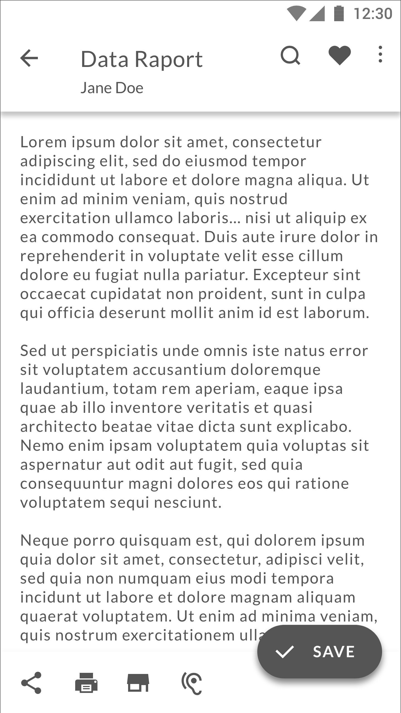
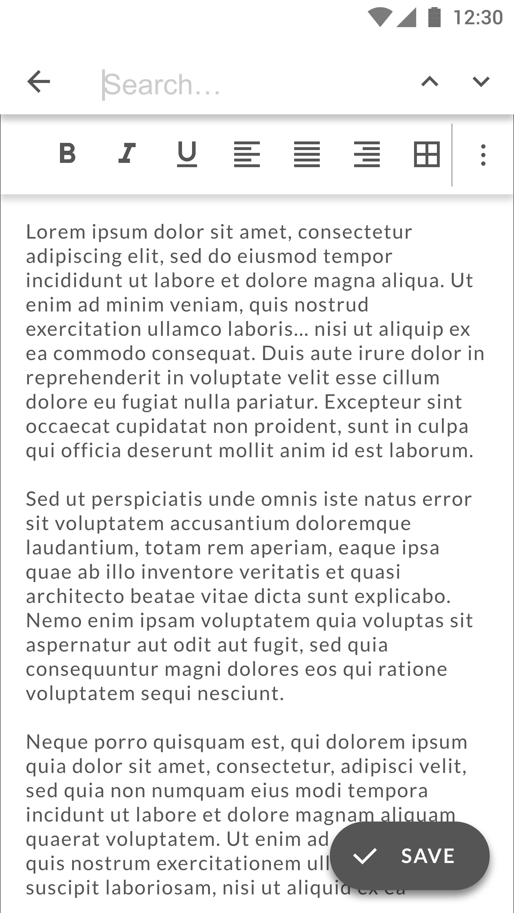

OpenDocument Reader app
Redesign
The OpenDocument reader app let’s you open and edit ODF file formats. It is one of few apps that lets you open these file formats on Andoroid, and is much used and loved by it’s users. But it has a problem with keeping first-time users from uninstalling the app right after downloading. The focus of the redesign contest was to first and foremost address this problem.

Awareded design

Contest entry

Illustration
Why do people uninstall right away?
I first starting by examining possible reasons to why people uninstall the app right after downloading, which was more or less the only thing I knew about the users of the app. So I started by downloading the app and trying to work a bit with it, and get familiar with the way it operates.
Screens from the current app
(left to rigth) Main screen with changelog; actions dropdown; recent documents.
The main screen of the app, thus the first thing the user lays her eyes on, is the changelog, which doesn't give one much intuition as to what you can do with the app.
The options alowwing user to actually edit the file, which could point in the direction of what it is possible to do, are burried deep inside the menu structure.
Two User Groups
I have approached the task of redesign by focusing on two user groups: first time users and recurring users, and designed different approach for each. For the first-time users, who just wants to open a file for a first time on his/her phone, and explore on the go the functionality of the app - I wanted to make the navigation very straight forward. The main and only action on the sceern (the FAButton) is adding/opening a file.
The main screen for the first-time users
As the app struggles with retaining first-time users, the main screen is kept very simple, having only the main action visible on the screen in order to nudge the users to make that first step - to open a file and explore other functionalities of the app.
A background image shows a person proofreading, and serves as a visual remainder of the main functions of the app. A pice of short copy stating what you can do could be further tested with the users to see if it is necessary.
The FAB can be with or without text, but as this is the only action on the screen, the text can be a welcome addition, and help kill any potential guessing as to what the button does.
Navigation for the recurring users
The main screen for recurring users
The screen shows recent documents in a card layout. Cards have document title and author in main heading, and give a sneak peak of the document, so that the user can skim the content for whether he/she wants to edit/read before opening it fully.
The bottom navigation bar offers choice between Recent or Favorite files, and access to the settings menu.
Favorites
Most recent favorites shows first in the list. The user can swipe the card, and an option for “un-favoriting” the document appears.
To open a new file for the recurring users a FAB is shown as a “blanc document card”, making a new document a part of the document list.
Recent documents
Most recently opened files shows first in the list. If the user swipes the card, and an option for deleting the document appears. This can of course be done from the document itself, card view being just a shortcur user can use to delete.
Editing a document
 Recent documents
The edit document screen open after the user has clicked + button and opened a new document, or chose from recent or favorite. In case of choosing from recent or favorite, the card zooms to show the full page preview, thus making the two actions connected with an animation of expanding the preview to full document.
Top bar can be used to search throughout the document - without data on the app usage available, I have assumed that this would be the most used button and thus put it in the first place from the left. User can also favorite the current document from this screen, and any other relevant action can be put in the “More” menu.
The FAB is Save button. Bottom app bar lets the user see the actions at once and makes them available on one tap, instead of having to dig into menus.
When the user starts taping into the document (points to words or selects them), a formatting menu appears.
The bottom app bar disappears when the user is scrolling through the document, leaving the text in Full screen view. The FAButton can also shrink to the circular FAB without textual explanation in Full Screen mode.
Other suggestions
Since the app had an issue with retaining first-time users, I have also suggested reevaluating the name of the app - the main functionality at first was to be able to read a file, but it has evolved to allow editing a file to. Yet the app steal has the word reader in the name.
I think that the name can be confusing for first time users, toghether with the main screen showing a changelog. This is why I have suggested to use a background image, showing a person/hand in proofreading activity, which should immediately show the user that he/she would be able to both read and edit a text document.
The verdict
The design was not the winning design, but have received good critics from the contest owner for being clean and simplifying the onboarding.
Check out more on the designs on the contest page.